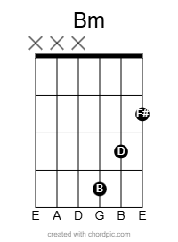

Lesson 3: New Friends - Chord Extensions and Moving Up the Neck
Now that you've mastered open chords and learned a few tunes, you're ready to expand your skills by exploring new chords and positions on the guitar neck.
This Lesson Covers:
Power Chords and Octaves: Easy shapes for rock and pop styles
Introduction to Barre Chords: Moving chord shapes up the neck
Shell Voicings and Extended Chords: Creating richer harmony
3.1 Power Chords and Octaves
Power chords (5 chords) are versatile, simple shapes used frequently in rock, pop, and metal. They contain only two notes: the root and the fifth. Octave shapes reinforce melodies by doubling notes at different pitches.
Notice that the octave shape with the root on the D string is different than the others, that is because G -> B is a major third away (4 half steps). The guitar uses fourths (5 half steps) for every other string on the neck (E -> A, A -> D etc.)
Practice:
Explore power chords on different strings and positions.
Harmonize simple riffs using power chords using the major and natural minor keys, build a power chord on each note of the scale.
Listen to bands like Nirvana, Green Day, and The White Stripes to hear power chords in action.
First two measures: harmonizing power chords with the major scale Last two measures: harmonizing power chords with the natural minor scale.
3.2 Introduction to Barre Chords
Barre chords let you move familiar chord shapes up and down the neck, unlocking many more chords.
Getting Started with Barre Chords:
Begin with partial or "mini" barres on the top strings, gradually progressing to full barres like the E major and A minor shapes. Playing barre chords higher up on the neck is easier than barring close to the nut.
Remember, you don't have to press down every string—start small and focus on clarity and good posture. Think of the nut of the guitar like a barre, your pointer finger will become the nut.
Watch this short video to see proper barre chord posture:
E Shape Barre:
Step 1: Mini Barre - Use your pointer finger to press down the third fret of the high E and B strings.
Step 2: "Half" Barre - Place more fingers down
Step 3: Full Barre - Catch the Low G root with the barre
Am Shape Barre:
Step 1: Mini shape - No barre required, nice simple minor shape..

Step 2: "Half" Barre - Place more fingers down with our existing shape.
Step 3: Full Barre - Barre the high E and the B root on the A string.
Modifying the Third:
Minor Third: To transform our E shape into a minor shape, we just need to flatten the third (Em shape).
Lift the finger on the G string and replace it with our barre flattening the third by one half-step.
Major Third: To transform our Bm shape into a major shape we can raise the third (A shape).
Notice that we can see the E major and A minor open chord shape within the barre in our full shapes.
Try harmonizing a scale using the two primary barre shapes (E major, A minor), then explore barring other familiar open chord shapes.
3.3 Shell Voicings and the Magic of the 7th
Shell voicings are simplified chords that typically contain only the root, third, and seventh—omitting the fifth. But why leave out the fifth?
Why Do We Remove the Fifth?
The fifth note of a chord provides stability but contributes the least melodic character or color. Removing it simplifies our chord shapes without sacrificing the chord’s identity, allowing us to highlight the more expressive intervals—the third and seventh.
We also free up one of our 4 possible fingers, allowing the player to extend by thirds beyond the 7th adding more color to our chords (Ex. 9th, 11th, 13th).
Where the 7th Comes From:
When we harmonize a scale, we build chords by stacking notes from the scale in intervals of thirds. Let’s use the C major scale as an example:
C Major Scale: C – D – E – F – G – A – B – C
If we harmonize this scale starting from C (stacking thirds), we get:
C (root)
E (third)
G (fifth) (often omitted)
B (seventh)
This gives us a CMaj7 chord (C–E–B) as a shell voicing.
Understanding Dom7, Min7b5 and Min7 Chords:
Let’s explore how Dominant 7 and Minor 7 chords emerge from harmonizing the scale:
Dominant 7 (Dom7) chords occur naturally as the fifth chord (V chord) in a major key. For example, in the key of C major, the G chord harmonized in thirds gives us G–B–D–F. The interval from G to F (a flattened 7th) creates tension, giving the chord a bluesy, unresolved feeling.
Minor 7 (Min7) chords appear naturally as the ii, iii, and vi chords in a major key. For instance, D minor (ii chord in C major) harmonizes to D–F–A–C. The combination of a minor third and a minor seventh creates a mellow, relaxed, and soulful sound.
Minor 7b5 (Min7b5) chords appear naturally as the vii chords in a major key. For instance, Bm7b5 (vii chord in C major) harmonizes to B–D–F–A. This creates a tense sounds great for moving to the I.
Why the 7th Matters:
The addition of the 7th interval transforms chords by adding emotional depth and complexity:
Dominant 7 (Dom7): Tense, bluesy, and powerful—used extensively in blues, jazz, and rock. (Example: G7 - G–B–F)
Minor 7 (Min7): Warm, smooth, and soulful—ideal for jazz, R&B, and folk. (Example: Am7 - A–C–G)
Major 7 (Maj7): Rich, lush, and sophisticated—perfect for jazz ballads and contemporary pop. (Example: CMaj7 - C–E–B)
Half-diminished (m7(b5) or ø): Tense, great for getting back to the I chord or V chord
Practice Shell Voicings:
Try harmonizing the C major scale with some these three-note shell voicings, emphasizing the root, third, and seventh:
B half-diminished (Bm7♭5): B–D–A (dark, intriguing)
Shell Voicings:
Here are some examples of shell voicings, 1 - 3 - 7 and 1 - 7 - 3 refers to the order of the notes in the chord.
As you practice, listen closely to how adding the seventh changes the mood and depth of your chords, making your playing richer and more expressive.
E Root: 1 - 3 - 7:
E Root: 1 - 7 - 3:
A Root: 1 - 3 - 7:
A Root: 1 - 7 - 3:
3.4 Extended Chords Explained
You’ve worked with triads (1-3-5) and shell voicings that add the 7th.
Stack one more third and you hit the 9th—that bright, breathy colour you hear in jazzy chords.
Keep stacking and you’d reach the 11th and 13th, but for now we’ll stay focused on 9ths so you can apply them immediately.
Quick reference
Maj9 1-3-5-7-9
Min9 1-b3-5-b7-9
(9 add the 2nd; 11 = add the 4th; 13 = add the 6th)
On guitar you almost never grab every note.
We keep the shell (root + 3rd + 7th), drop the 5th, and hang the 9th on top.
Same fretting logic you already know, just one more note.
Building Maj9 / Min9 from Shell Voicings
Grab a shell voicing (e.g. E-root, 1-3-7).
Locate the 9th: two frets up from the root on the next higher string (or the same pitch class one octave up).
Add that note; (Omit the 3rd or 7th if you need a finger, or try barring.)
These extended 9th chords can add new feeling and texture to your playing and each extensions feels different.
Harmonize the shapes in a scale and you're good to go.